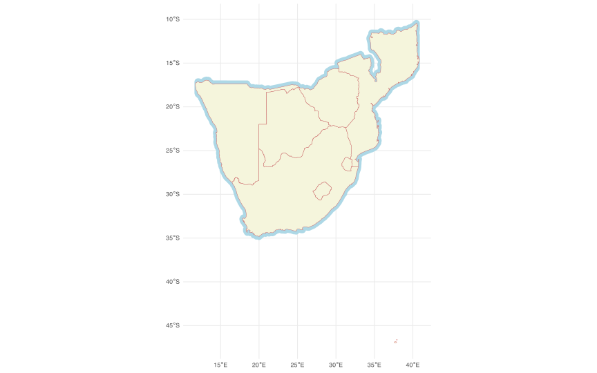

BCB744 Intro R Self-Assessment
Here is a self-assessment worksheet for the Introduction to R portion of the BCB744 course, based on the provided sources. This worksheet is designed to help you gauge your understanding of the material covered in each lecture and provides resources for further practice.
General Instructions
- For each section, rate your understanding as “Beginner,” “Intermediate,” or “Advanced.”
- Complete the practice exercises to test your skills.
- Use the provided links to datasets or create your own to practice the concepts.
- Review the relevant course material if you find you are struggling with a section.
Task A
1. R and RStudio
Understanding Level: Beginner / Intermediate / Advanced
Key Concepts
- Installation of R and RStudio
- Understanding the RStudio IDE
- Navigating the RStudio interface
- Basic R syntax
Practice Exercises
- Open RStudio. Create a new R script.
- Execute basic arithmetic operations (e.g.,
2 + 2, 5 * 3) in the console. - Explore the different panes in the RStudio interface (Source, Console, Environment, History, Files, Plots, Packages, Help).
Questions
- Why will I get annoyed when you say in your Methods section of your paper that you used RStudio for your analysis?
- Why is it best practice to include packages you use in your R program explicitly?
- What are the values after each hashed statement in the following? Use the RStudio Console to determine these values:
- Use R to calculate some simple mathematical expressions. Assign the value of
40toxand assign the value of23toy. Makezthe value ofx - yDisplayzin the console. - Explain what this code does (below). What have you learned about writing code, and how would you apply what you have learned in the future? When would one want to use the
round()function? Name a few example use cases.
2. Working with Data and Code
Understanding Level: Beginner / Intermediate / Advanced
Key Concepts
- Importing data into R.
- Understanding different types of data files.
- Understanding data structures (vectors, lists, data frames).
- Basic coding practices.
Questions
- What is the difference between an Excel file and a CSV file?
- What is the difference between a CSV and TSV file?
- Why is it important to see the file extension when working with data files?
3. R Workflows
Understanding Level: Beginner / Intermediate / Advanced
Key Concepts
- Creating reproducible workflows
- Using R scripts
- Commenting code
- Using packages
Practice Exercises
- Create a vector of numbers and a vector of characters and assign them to the variables
numbsandletts, respectively. - Place these two variables (
numbsandletts) into a data frame callednumbsletts. - Import the built-in dataset
ChickWeightusingdata(ChickWeight)and view it. - Use
head()andtail()to view the first and last rows. - Use
str()to see the structure of the data frame. - Create an R script that imports the
ChickWeightdataset and assigns it to the objectkfc. - Add comments to your script explaining what each line of code does.
Use ?datasets :: ChickWeight to find help for the dataset ChickWeight. The course website has links to download additional datasets.
Questions
- What is the purpose of commenting code?
- Why am I pedantic about using commas and periods correctly in my code?
- Create a script to read in the file
crops.xlsxand assign its content to the objectcrops. - Save the newly-created object to a CSV file called
crops.csvwithin your workspace. - What purpose can the naming of a newly-created dataframe serve?
- Using annotated R code, demonstrate your understanding of the various ways to look inside of the
cropsobject. - Explain what you see inside the file. What are the columns? What are the rows? What are the data types?
- Explain in words what the pipe operator
%>%does in R. How does it make your code more readable? - Using the various tidyverse functions, calculate the mean ± SD for the crop mass within each combination of
blockandfertiliserof thecropsdataset.
Task B
4. Graphics with ggplot2
Understanding Level: Beginner / Intermediate / Advanced
Key Concepts
- Creating basic plots with ggplot2.
- Understanding the grammar of graphics.
- Using layers, aesthetics, and geoms.
Practice Exercises
- Create a scatter plot using ggplot2 with the
ChickWeightdataset, plottingweightagainstTime. - Create separate figures for each
Dietgroup (i.e. you will have four plots, one for each diet group). - Add appropriate titles and axes labels to the plots.
- Experiment with different geoms like
geom_line()orgeom_point().
5. Faceting Figures
Understanding Level: Beginner / Intermediate / Advanced
Key Concepts
- Using
facet_wrap()andfacet_grid()to create subplots. - Displaying data across multiple dimensions.
Practice Exercises
- Create a scatter plot with ggplot2 using the
ChickWeightdataset and usefacet_wrap()to create subplots for eachDiet. - Experiment with different
facet_wrap()andfacet_grid()arguments.
Question
- Create a scatterplot of
bill_length_mmagainstbill_depth_mmforChinstrappenguins onBiscoeisland. - Create histograms of
bill_length_mmforAdeliepenguins on all three islands (one figure per island). Save each figure as a separate R object which you can later reuse. Again forAdeliepenguins, create a boxplot forbill_length_mmshowing all the data on one plot. Save it too as an R object. Combine the four saved figures into one figure usingggarrange(). - Create a scatter plot of
flipper_length_mmagainstbody_mass_gand usefacet_wrap()to create separate panels for each island. Take into account which variable best belongs onxandy. Describe your conclusions. - Create a scatter plot of
bill_length_mmandbody_mass_gand usefacet_grid()to create separate panels for each species and island. Describe your findings. - Using the figure created in point 4, also show the effect of
sex. Explain the findings. - What are the benefits of using faceting in data visualisation?
6. Brewing Colours
Understanding Level: Beginner / Intermediate / Advanced
Key Concepts
- Customising colours in plots.
- Using colour palettes effectively.
Practice Exercises
- Recreate the plots from previous exercises and experiment with different colour scales (e.g., using
scale_color_brewer(),scale_fill_viridis_c()). - Choose colours that are appropriate and informative for the data you are displaying.
Task C
7. Mapping with ggplot2
Understanding Level: Beginner / Intermediate / Advanced
Key Concepts
- Creating basic maps using ggplot2.
- Using spatial data.
Practice Exercises
- Staying with the figure you created above, change various aspcects of the theme, line types and thickness, colour fills and other colours, etc. Create some variations for the map and save them as separate figures.
- Think about which aethetic choices make the most pleasing maps.
8. Mapping with Style
Understanding Level: Beginner / Intermediate / Advanced
Key Concepts
- Customising map aesthetics.
- Adding themes to maps.
Questions
- Use the map you created in this lecture and add a title and subtitle. Also adjust it to show appropriately labelled axes.
- Add a the capital city/town of each province to the map using
geom_point()and ensure the place name is correctly associated with its point.
9. Mapping with Natural Earth and the sf Package
Understanding Level: Beginner / Intermediate / Advanced
Key Concepts
- Using the sf package for spatial data.
- Working with Natural Earth data.
Practice Exercises
- Use the rnaturalearth package to download a Natural Earth map of a country of your choice, then plot it using the sf package.
- Explore other spatial datasets available with the rnaturalearth package.
Questions
buffer <- safrica_countries_new %>%
st_buffer(0.4)
ggplot() +
geom_sf(data = buffer, fill = "lightblue", col = "transparent") +
geom_sf(data = safrica_countries, colour = "indianred", fill = "beige") +
theme_minimal()
- Why does the map region extend so far south of the southern tip of Africa when we requested only the countries South Africa, Mozambique, Namibia, Zimbabwe, Botswana, Lesotho, and Eswatini?
- How do we fix this to plot a more sensible map of the region?
- What does
st_buffer(0.4)do? - With the above map, zoom into False Bay and the Cape Peninsula. Add the location of the Cape Town city centre to the map using
geom_point(). Ensure the point is correctly associated with the city name. Ensure the map is correctly labelled and has a title, and is as close to publication quality as you can make it.
Bonus Task
10. The Fiji Earthquake Data
Understanding Level: Beginner / Intermediate / Advanced
Key Concepts
- Working with real-world datasets.
- Applying mapping skills to specific data.
Practice Exercises
- Import the Fiji Earthquake data.
- Use a suitable map to represent the data, with size and colour varying with the magnitude and depth of earthquakes.
Questions
- Please recreate the figure, above. You are welcome to reuse the code found on the website.
- When plotting the earthquakes, include only the earthquake data for earthquakes of magnitude greater than the 75th percentile.
- Add a point for each of the main island nations in the South Pacific region. Ensure the point is correctly associated with the island name.
- Ensure the map is correctly labelled and has a title, and is as close to publication quality as you can make it.
Your code needs to show all the steps (thoroughly annotated) leading to the final figure in point 4.
Task D
11, 12 & 13. Tidy Data
Understanding Level: Beginner / Intermediate / Advanced
Key Concepts
- Principles of tidy data.
- Using tidyr for data reshaping.
- Using dplyr for data wrangling.
Practice Exercises
- Import a messy dataset and practice reshaping using
tidyr::pivot_longer()andtidyr::pivot_wider(). - Use dplyr to clean and manipulate data in the tidy format.
Questions
- What are the key principles of tidy data?
- What are the differences between wide and long format data?
- Using the tidy data (
SACTN2_tidy) and untidy data (SACTN2), create line graphs, one for each of DEA, SAWS, and KZNSB, showing a time series of temperature. Ensure you have a column of three figures (ncol = 1). Use the fewest number of lines of code possible.
You should end up with two graphs, each with three panels.
Lecture 14: Recap
Understanding Level: Beginner / Intermediate / Advanced
Key Concepts
- Review of all key concepts.
- Practical application of learned skills.
Practice Exercises
Using a dataset of your choice, perform a full analysis, including data cleaning, manipulation, and visualisation using all the skills learned from previous modules.
How to Use This Worksheet
- Be Honest: Accurately assess your understanding of each topic to identify areas you need to review.
- Practice Regularly: Consistent practice is key to mastering R.
- Seek Help: Don’t hesitate to ask questions on the GitHub Issues page for help.
- Collaborate: Work with your peers and discuss the concepts [8, 19].
- Use the Resources: Make full use of the provided links and materials for further study.
- Review: If you are struggling, review the course material provided by the instructor.
Reuse
Citation
@online{j._smit,
author = {J. Smit, Albertus and Smit, AJ},
title = {BCB744 {Intro} {R} {Self-Assessment}},
url = {http://tangledbank.netlify.app/assessments/BCB744_Intro_R_Self-Assessment.html},
langid = {en}
}